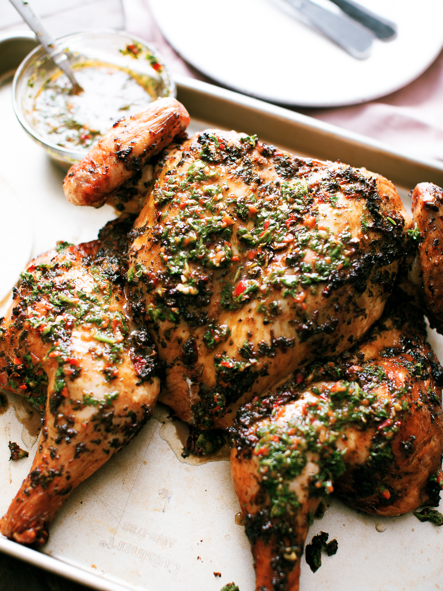

Chimmichurri Baked Chicken

Description
Chimmichurri is a dish originating from Argentina. It is most often
served over grilled chicken or steak. This version is based off
of the authentic dish but may have aquired it's own twist over the years.
Ingredients
- 1/2 cup finely chopped parsley
- 2 1/2 tablespoons olive oil
- 2 tablespoons chopped fresh oregano leaves
- 1 tablespoon red wine vinegar
- 2 cloves garlic, minced
- 1/4 teaspoon salt
- 1/8 teaspoon red pepper flakes
- 1 pinch freshly ground black pepper
- 1 (3 pound) whole chicken
- 1 teaspoon olive oil
- 1 large onion, sliced
- 1/2 cup chicken broth